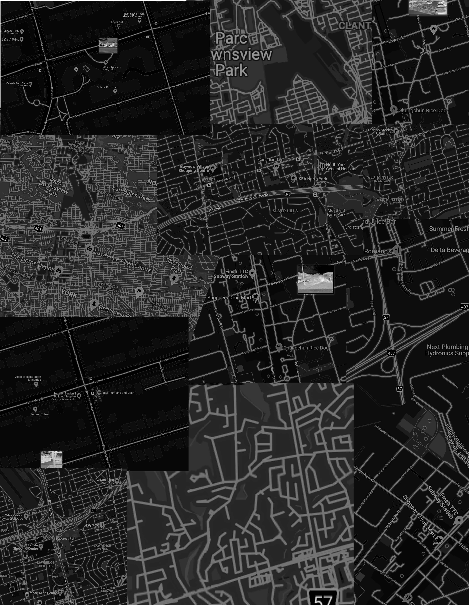
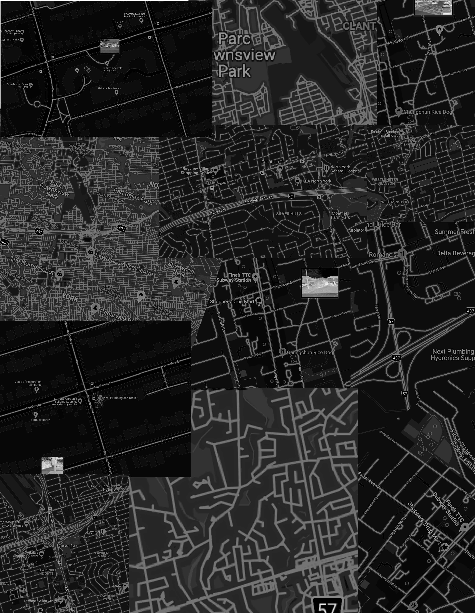
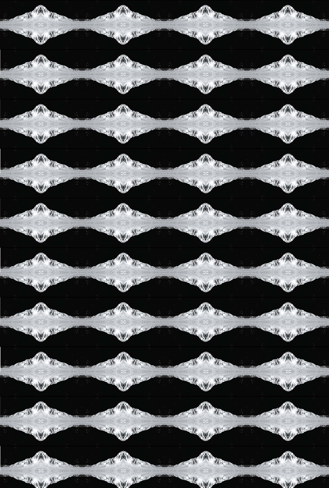
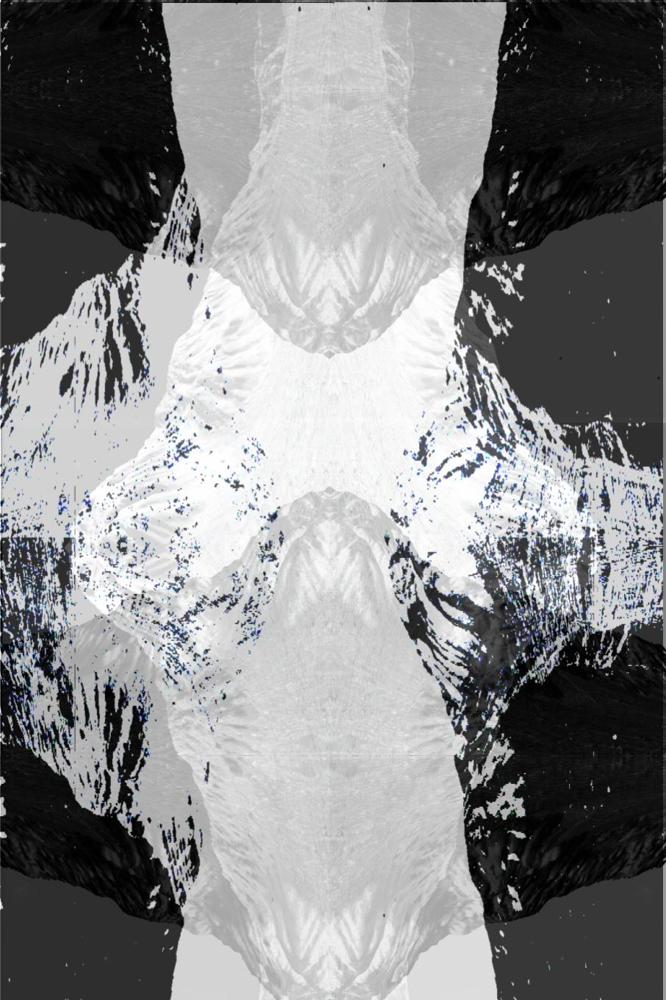
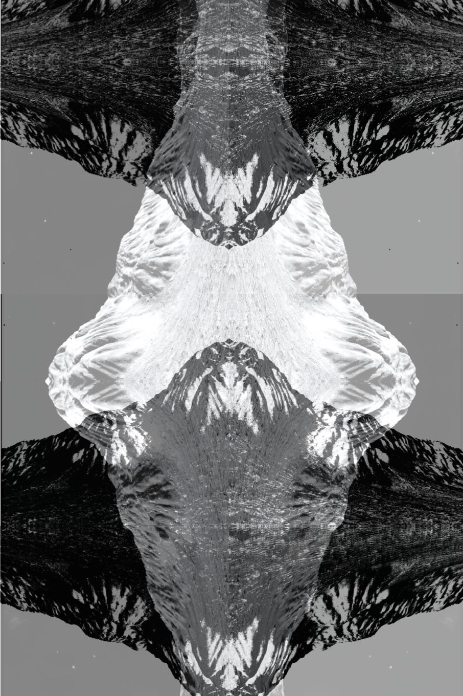
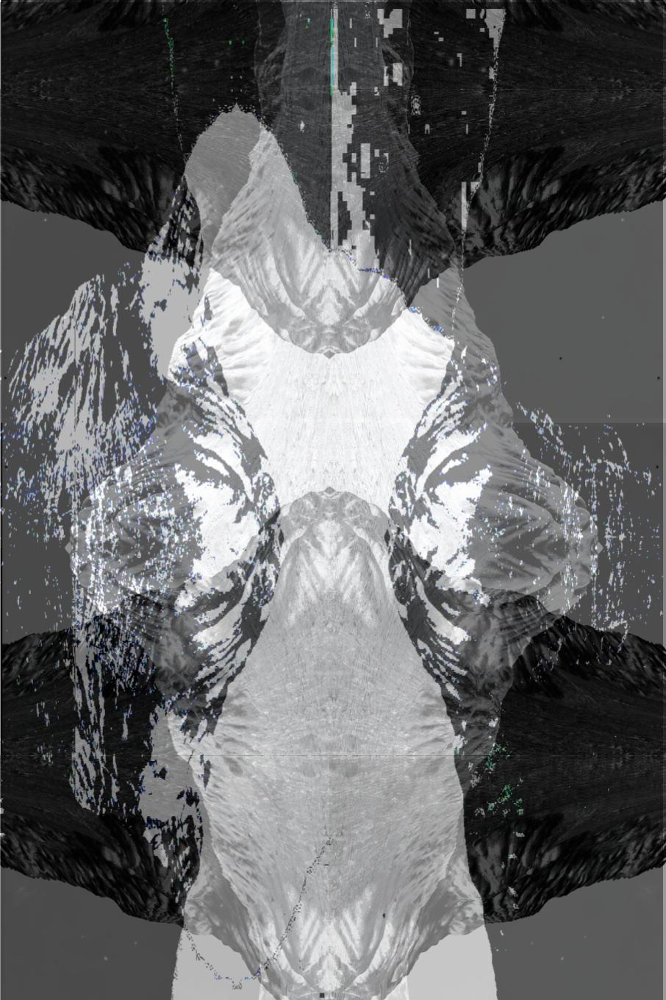
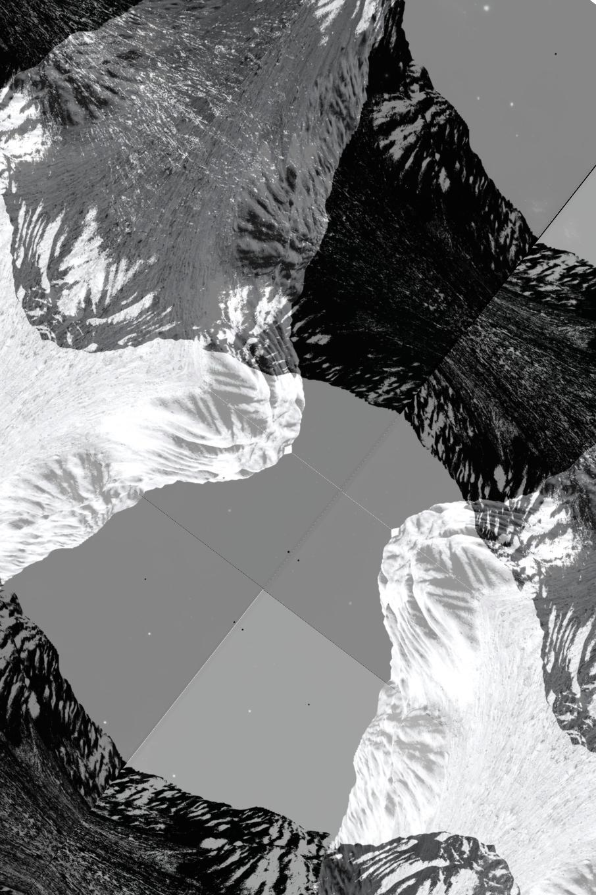

Week 1
Early Experiments

 


Space/Moon Simulator Software


Screen Shots

For the first stage of this assignment, I mainly experimented with the textural aspect of my data and aimed to test the flexibility of my tools. In this series of compositions, I used principles such as repetition and direction as a way to transform my images and data into a paintbrush. Additionally, my goal here was to achieve cycles/patterns that showcase the iteration of time during the pandemic, and eventually to be used as elements within the final layout.


Week 2
I used google docs as my main canvas and tool for this assignment which gives slightly more advanced options to its users to be able to adjust the levels and pictorial dynamics of their images. Accordingly, I used images that I had created in the previous stage in various orders and directions, and by editing the transparency and contrast I tried to achieve more depth and profundity which due to the limitations of my tools was however unsuccessful.
    Furthermore, another method I experimented with was the use of my previously composed images as paintbrushes themselves. As seen in some compositions, again by using repetition and direction I attempted to arrange those elements in a way that they are seen as one particle/ shape.


Week 3

Conceptually, my seek was to illustrate the self-realization and entanglement that was felt during the pandemic. Naturally, my goal for this project slightly transitioned as I became more familiar with my tools and started to disassemble and personalize the workflow. One of the challenges in this stage was the ability to narrow down all the compositions and approaches for a final presentation. In other words, due to the fact that I had more control and was introduced to new algorithms and possibilities in my work it was more difficult to advance to a composition.


One of the reasons being, through this new process of design, re-learning techniques, and numerous explorations I would at times create work that resembled references that were not a part of the origin of my ideas. For instance, after retrieving more data and images and assembling those with the previous methods, I realized that I had recreated compositions similar to Rorschach tests which a psychological, and self-realizing component to my concept.


Particle Process
With the help of additional feedback and class critiques, I was finally able to conclude an approach for my final composition. I realized that the majority of the layouts that I had created contained great ability to become elements, or in other words paintbrushes for the final composition. Consequently, I proceeded to cut down my previous process and create a new element with a gradient that gave my work more dynamic and depth that had previously been absent.


In order to achieve a transparent gradient I decided to use the “reflection effect” that google docs provides for its objects and layer them.


Final

The final composition is representative of a simultaneous sense of entanglement and emptiness. As we developed further in the project and familiarized ourselves with the tools my original concept evolved into a more abstract representation of myself during the pandemic. The repetitive elements/particles are meant to portray my individual thoughts, interests, and the reflective state I happened to be in, during the pandemic. As displayed, these single particles continue to repeat themselves and eventually create an impression of chaos and interweaving which denote my thread of thinking and overall character realization. Additionally, the negative space depicts a sense of collective and abrupt emptiness that the world underwent and works in contrast with the rest of the composition.